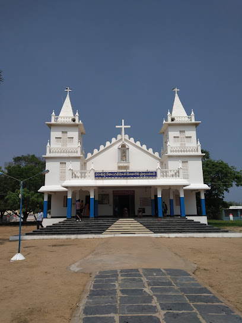

Velangini Mata Church

Temple Name: Velangini Mata Church
History: A new parish is created as a Christu Jayanthi Maha Jubilee Memorial. Villages taken from Bobbili, Manapuram, and Uttaravalli comprise this new parish. Presbytery is under construc- tion beside the Rajam-Rambadrapuram main road at Badangi in the land recently purchased for this purpose. A shrine dedicated to Blessed Mother is in offing at Koduru.
Maps